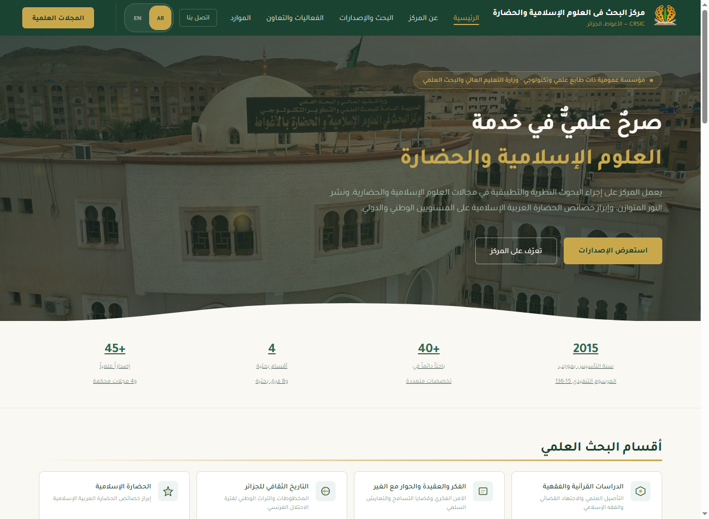
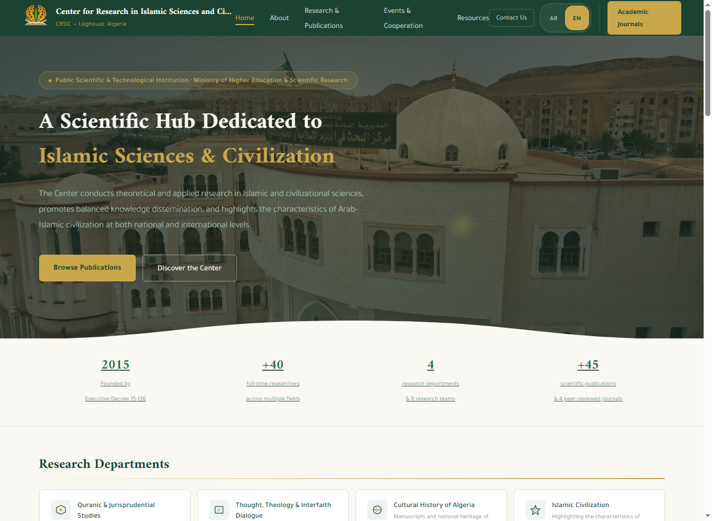
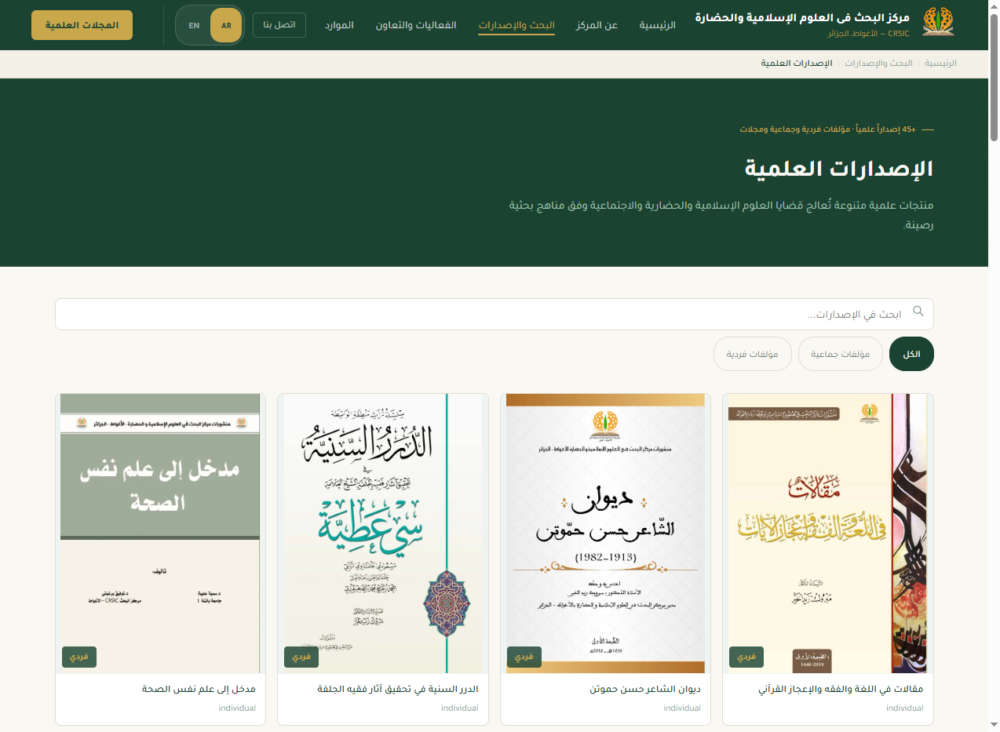
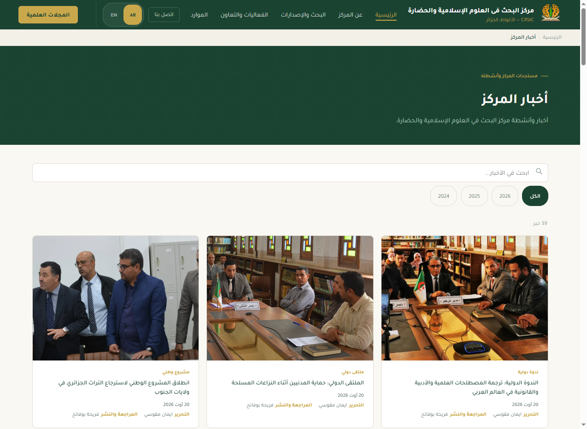
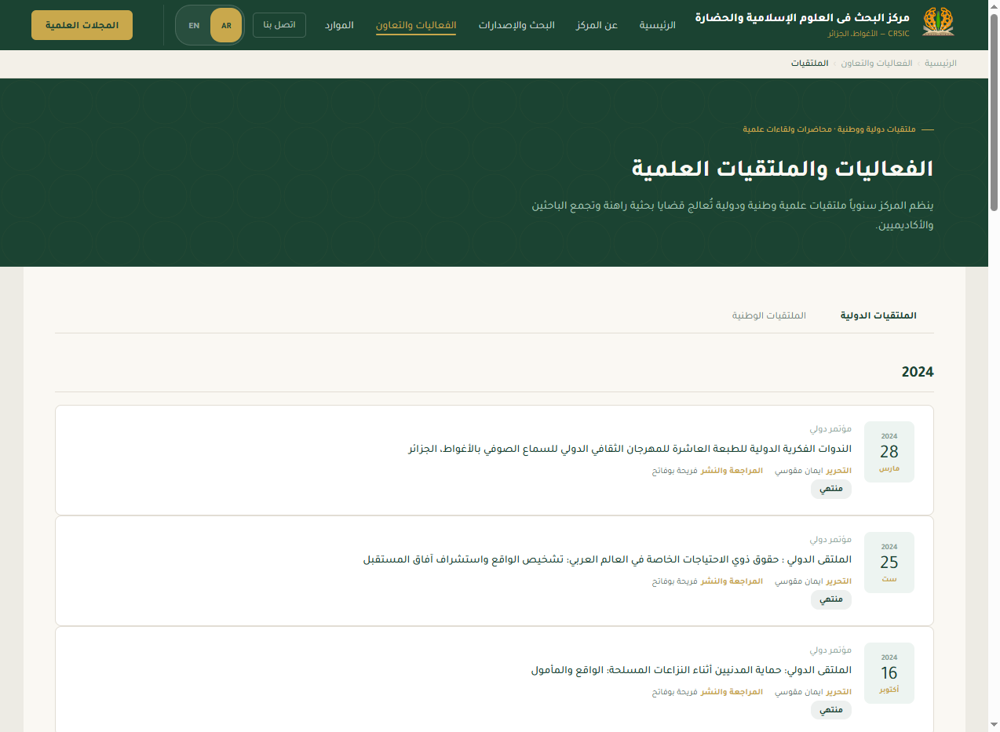
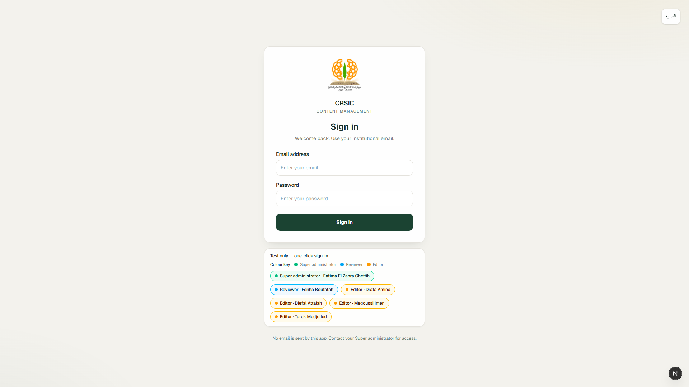
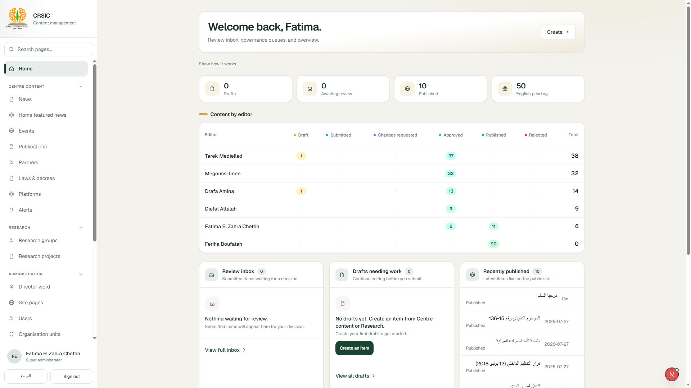
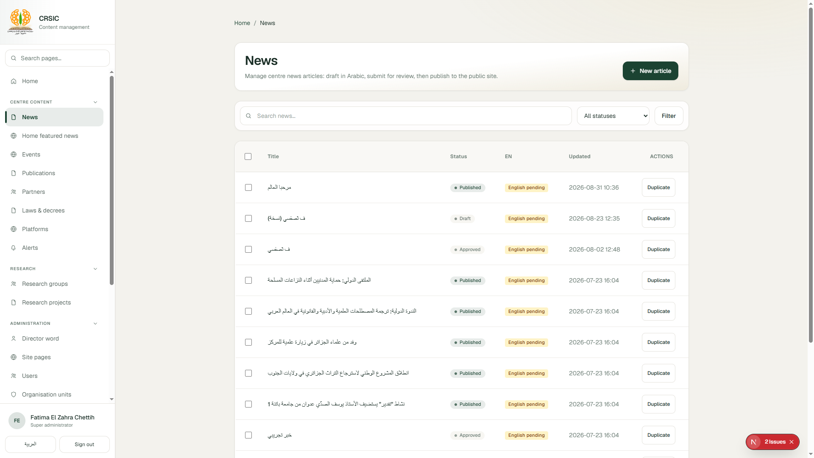

CRSIC 2026 · Digital presence
A factual briefing on what is live: the Arabic-first public site, the internal content desk, publish governance, inventory, safeguards, and remaining work — illustrated with screenshots from the running systems.
Center for Research in Islamic Sciences and Civilization · Laghouat · crsic.dz
Contents
Eighteen slides. Navigate with arrows or Space. Language: EN / ع.
Institution
CRSIC is a public scientific and technological research centre under Algeria’s Ministry of Higher Education and Scientific Research. Founded by executive decree 15-136 (23 May 2015); opened January 2016, Laghouat.
Present the centre, research departments, publications, journals, events, partnerships, news, and contact paths to researchers, partners, and the public.
Staff publish through roles and review — not by editing live WordPress or raw production files by hand.

Transition
Owned content types have already cut over. Journals remain on Open Journal Systems by design.
Architecture
Visitors never run the editorial system. Staff never hand-edit the live public files.
Public site · map
Hero video, stats, 4 departments, pubs strip, featured news, Center News pager, events teaser
Full archive, search, year filters, detail #news/{slug}, bylines
Collective / individual filters, search, covers, detail pages, lightbox
International & national tabs, status badges, detail #event/{slug}
Four department tabs, groups & projects with slug details
National / international cooperation with narrative detail
Institutional hubs + #law/{slug} and #platform/{slug}
Mission/vision/director, org chart, contact + optional CMS site-pages overlay
Public site · home
Looping video, centre positioning, CTAs to publications and about.
Founding year, researchers, departments, publications — deep-links into site sections.
Four cards into #research tabs r1–r4.
Grid on desktop; horizontal scroll-snap on phone.
Featured playlist (max 10), Center News 3-per-page autoplay, 3 newest events.

Public site · catalogues



Each detail updates page title and social meta for that item.
Language policy
Inventory
Approximate counts from public JSON after WordPress cutover of owned types.
| Resource | Count | Detail |
|---|---|---|
| Events breakdown | 14 + 41 | International + national |
| Research groups / projects | 8 / 1 | Four research departments |
| Laws / platforms | 3 / 3 | Hubs with slug details |
| Journals | 4 | All link to crsic.dz/ojsre/ (OJS) |
| UI locale keys | 350 × 2 | AR + EN matched key sets |
| Featured playlist | 0–10 | Empty → fallback 3 newest news |
Connections
Scientific journals — not authored in the desk. Cards and footer point to https://crsic.dz/ojsre/
OPAC at crsic.dz/bib/opac_css/ — also reachable from publication lightbox CTA.
mailto:contact@crsic.dz · phone +213 29 14 61 90 · webmail :2096
Google Maps search from the contact page for Laghouat location.
Facebook, X, LinkedIn in the footer for institutional channels.
Optional CMS publish of About / org / contact / cooperation bodies; locales remain fallback until first publish.
Editorial desk · workflow
Statuses: draft → submitted → approved → published. Side paths: changes_requested, rejected, unpublished.
Editor on assigned types; Arabic required; media upload; EN optional
Enters review queue; withdraw possible before approval
Request changes / approve / reject — author cannot self-approve
Manual only; rebuilds public JSON; revision keeps live copy
“Create revision (public stays live)” returns a published item to draft while live_payload remains until the next publish.
Super Admin may emergency-publish with audit trail and post-review flag — exceptional, not routine.
Editorial desk · roles
Users, desks, org units, audit, import/export, recycle, all types. Password resets. Emergency publish.
Approve / request changes / reject / publish / unpublish in exclusive org scope. Cannot manage users.
Create/edit own items in assigned content types only. Submit and revise. Cannot approve or publish alone.

Editorial desk · interface


Editorial desk · capabilities
Order up to 10 news ids for home spotlight. News Editor + SA + Reviewer edit draft; only Reviewer/SA publish the playlist.
JPEG/PNG/WebP/PDF, max 5 MB, magic-byte check. Scoped by role. Cover crop / img_card for publications.
Soft-delete; restore to draft. Editors: own draft/rejected. SA: unpublished/rejected. Stale after 90 days.
Duplicate → new draft (title suffix copy). From edit page and bulk for Reviewer/SA.
SA zip of desk records + files. Export selected. Import always creates new drafts — never live.
Append-only audit log. Revision history with restore to editable draft (Reviewer/SA).
In-app only — no SMTP for alerts or password recovery.
In-form public card preview + short-lived tokens for SPA #preview/{token}.
Load more (20), header sort this visit, bulk unpublish/recycle with skip report.
Safeguards
Open items
Faster image delivery; English visibility for remaining types when marked ready. Does not block Arabic publication.
Remain on OJS. No desk journals work unless a new written decision opens that slice.
Cancelled. Rule remains Approve → Publish by a human.
Visitor statistics, translator role, staff SSO — only if prioritised as a new decision.
Closing
A live public website and a live editorial desk: desks, four-eyes review, audited manual publish, bilingual chrome, and WordPress cutover complete for owned types.
Public site · desk · cutover · inventory · audit · featured playlist · recycle · I/E
WebP delivery · remaining English-when-ready coverage
Whether any new slice is opened beyond the current pack
CRSIC · Laghouat · crsic.dz · End of briefing